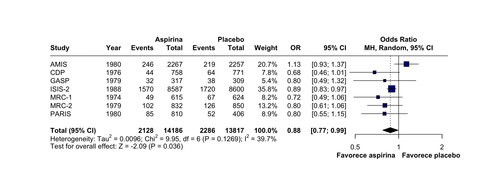

| Author | Year | event.e | n.e | event.c | n.c |
|---|---|---|---|---|---|
| MRC-1 | 1974 | 49 | 615 | 67 | 624 |
| CDP | 1976 | 44 | 758 | 64 | 771 |
| MRC-2 | 1979 | 102 | 832 | 126 | 850 |
| GASP | 1979 | 32 | 317 | 38 | 309 |
| PARIS | 1980 | 85 | 810 | 52 | 406 |
| AMIS | 1980 | 246 | 2267 | 219 | 2257 |
| ISIS-2 | 1988 | 1570 | 8587 | 1720 | 8600 |
7 Meta-análise de desfechos binários
7.1 Instalando e Carregando o Pacote meta
Antes de começar, precisamos instalar e carregar o pacote meta, que contém as funções necessárias para realizar metanálises.
Passo 1: Instalar e carregar o pacote meta
install.packages("meta") # Instalar o pacote
library(meta) # Carregar o pacote7.2 Preparando seu Conjunto de Dados
Antes de iniciar sua metanálise, é essencial garantir que os dados estejam organizados corretamente. Isso evita erros e facilita a compatibilidade com as funções do R.
Abaixo está um exemplo de como estruturar seu conjunto de dados no Microsoft Excel antes de importá-lo para o R.
Neste capítulo usamos a planilha de exemplo data.xlsx, apresentada no capítulo 5.
Após organizar seu conjunto de dados, importe-o para o R, converta-o para um data frame e atribua o nome acm, referente ao desfecho All-Cause Mortality.
7.3 Criando sua Metanálise
A função metabin() é utilizada para realizar metanálises de desfechos binários, ou seja, situações em que existem apenas dois possíveis resultados (por exemplo: vivo/morto, sucesso/fracasso ou sim/não).
Principais argumentos da função metabin()
event.e → Número de eventos no grupo experimental.
n.e → Número total de participantes no grupo experimental.
event.c → Número de eventos no grupo controle.
n.c → Número total de participantes no grupo controle.
data → Nome do data frame contendo os dados da metanálise (neste exemplo,
acm).method → Método utilizado para combinar os estudos. O padrão é
"MH"(Mantel-Haenszel).method.tau → Método utilizado para estimar a variância entre os estudos. Neste livro, usamos
"DL"(DerSimonian-Laird); nas versões atuais do pacote, o padrão é"REML"(máxima verossimilhança restrita).sm → Medida de efeito utilizada. As opções mais comuns são
"RR"(Risk Ratio) e"OR"(Odds Ratio).method.random.ci → Método usado para calcular o intervalo de confiança no modelo de efeitos aleatórios. O padrão é
"classic";"HK"aplica o ajuste de Hartung-Knapp. Em versões antigas do pacote, esse argumento se chamavahakn.studlab → Nome da coluna contendo a identificação dos estudos (por exemplo,
Author).
7.4 Exemplo de Código
m.acm <- metabin(
event.e,
n.e,
event.c,
n.c,
data = acm,
method = "MH",
method.tau = "DL",
sm = "OR",
method.random.ci = "classic",
studlab = Author
)7.5 O que acontece aqui?
O comando acima cria um novo objeto chamado m.acm, que armazenará todos os resultados da metanálise referente ao desfecho All-Cause Mortality (ACM).
Esse objeto conterá informações como:
- medida de efeito combinada;
- intervalo de confiança;
- heterogeneidade;
- pesos dos estudos;
- resultados individuais;
- informações necessárias para construção do Forest Plot.
7.6 Visualizando os Resultados da Metanálise
Após executar a função metabin(), podemos visualizar um resumo estatístico utilizando a função summary().
Código
summary(m.acm) OR 95% CI %W(common) %W(random)
MRC-1 0.7197 [0.4890; 1.0593] 3.2 8.2
CDP 0.6808 [0.4574; 1.0132] 3.1 7.8
MRC-2 0.8029 [0.6065; 1.0629] 5.7 13.2
GASP 0.8007 [0.4863; 1.3186] 1.8 5.4
PARIS 0.7981 [0.5526; 1.1529] 3.2 8.9
AMIS 1.1327 [0.9347; 1.3728] 10.2 20.7
ISIS-2 0.8950 [0.8294; 0.9657] 72.9 35.8
Number of studies: k = 7
Number of observations: o = 28003 (o.e = 14186, o.c = 13817)
Number of events: e = 4414
OR 95% CI z p-value
Common effect model 0.8969 [0.8405; 0.9570] -3.29 0.0010
Random effects model 0.8763 [0.7743; 0.9917] -2.09 0.0365
Quantifying heterogeneity (with 95% CIs):
tau^2 = 0.0096; tau = 0.0982; I^2 = 39.7% [0.0%; 74.6%]; H = 1.29 [1.00; 1.99]
Test of heterogeneity:
Q d.f. p-value
9.95 6 0.1269
Details of meta-analysis methods:
- Mantel-Haenszel method (common effect model)
- Inverse variance method (random effects model)
- DerSimonian-Laird estimator for tau^2
- Mantel-Haenszel estimator used in calculation of Q and tau^2 (like RevMan 5)
- Calculation of I^2 based on Q7.7 O que o summary() mostra?
A função summary() fornece um resumo completo da metanálise, incluindo:
estimativa da medida de efeito (Odds Ratio ou Risk Ratio);
intervalo de confiança de 95%;
número de estudos incluídos;
peso de cada estudo;
heterogeneidade entre os estudos;
estimativa da variância entre estudos (Tau²);
estatística Q de Cochran;
valor de I²;
testes estatísticos referentes ao efeito combinado.
7.8 Interpretando os Resultados
Efeito combinado → No modelo de efeitos aleatórios, o odds ratio foi de 0,88 (IC 95%: 0,77 a 0,99; p = 0,04). Como o valor é menor do que 1 e o intervalo de confiança não inclui o 1, a chance (odds) de óbito foi cerca de 12% menor no grupo aspirina do que no grupo placebo.
Efeito comum × efeitos aleatórios → O modelo de efeito comum produziu um resultado semelhante (OR = 0,90; IC 95%: 0,84 a 0,96). O intervalo do modelo de efeitos aleatórios é mais largo porque incorpora a variação entre os estudos.
Heterogeneidade → O I² foi de 39,7%, indicando heterogeneidade moderada, e o teste Q não foi significativo (p = 0,13). O intervalo de confiança do I², porém, vai de 0% a 74,6%: com apenas 7 estudos, a estimativa da heterogeneidade é pouco precisa.
💡 O odds ratio não é o mesmo que o risco relativo. Quando o evento é pouco frequente, os dois ficam próximos; quando é frequente, o odds ratio se afasta mais de 1 do que o risco relativo e não deve ser interpretado como redução de risco.
7.9 Criando um Gráfico de Floresta (Forest Plot)
Após criar a metanálise e armazenar seus resultados no objeto m.acm, podemos visualizar os resultados graficamente utilizando a função forest().
O que é um Forest Plot?
O Forest Plot é o gráfico mais utilizado em metanálises. Ele apresenta, de forma visual, o efeito individual de cada estudo incluído na análise, bem como a estimativa combinada de todos os estudos.
Cada estudo é representado por um quadrado, cujo tamanho é proporcional ao seu peso na metanálise, acompanhado por uma linha horizontal correspondente ao intervalo de confiança de 95%. Ao final do gráfico, o efeito combinado é representado por um diamante.
7.10 Código para gerar o Forest Plot
forest(
m.acm,
layout = "Revman5",
sortvar = studlab,
label.e = "Aspirina",
label.c = "Placebo",
label.left = "Favorece aspirina",
col.label.left = "black",
ff.lr = "bold",
label.right = "Favorece placebo",
col.label.right = "black",
leftcols = c(
"studlab",
"Year",
"event.e",
"n.e",
"event.c",
"n.c",
"w.random",
"effect",
"ci"
),
rightcols = FALSE,
pooled.events = TRUE,
pooled.totals = TRUE,
random = TRUE,
common = FALSE,
diamond.random = TRUE,
fs.heading = 12,
fs.study = 12,
fs.hetstat = 12,
colgap = "6mm",
digits = 2,
digits.pval = 3,
col.square = "darkblue",
col.square.lines = "black",
col.diamond = "black",
col.diamond.lines = "black",
print.Q = TRUE,
print.pval.Q = TRUE,
print.tau.ci = TRUE,
test.overall.random = TRUE,
overall.hetstat = TRUE
)
7.11 Principais Argumentos da Função forest()
A função forest() possui diversas opções de personalização. A seguir, são apresentados os argumentos mais importantes utilizados neste tutorial.
sortvar
Define a ordem em que os estudos serão apresentados no gráfico.
Neste exemplo, os estudos são ordenados pela variável studlab, que identifica cada estudo.
label.e e label.c
Definem os nomes que serão exibidos para os grupos experimental e controle. Em versões antigas do pacote, esses argumentos se chamavam lab.e e lab.c.
label.e = "Aspirina"
label.c = "Placebo"label.left e label.right
Adicionam rótulos indicando a direção do efeito observado.
Esses textos auxiliam na interpretação do gráfico, indicando qual intervenção é favorecida conforme a posição do efeito em relação à linha de nulidade.
leftcols
Define quais informações serão exibidas na tabela localizada à esquerda do gráfico.
Neste exemplo são apresentados:
- Nome do estudo;
- Ano de publicação;
- Número de eventos no grupo experimental;
- Número total de participantes do grupo experimental;
- Número de eventos no grupo controle;
- Número total de participantes do grupo controle;
- Peso do estudo;
- Medida de efeito;
- Intervalo de confiança.
random e common
Esses argumentos definem qual modelo estatístico será utilizado.
random = TRUE
common = FALSENesse exemplo, será utilizado o modelo de efeitos aleatórios, enquanto o modelo de efeitos fixos não será exibido.
w.random
Quando utilizado em leftcols, exibe o peso de cada estudo considerando o modelo de efeitos aleatórios.
Caso seja utilizado um modelo de efeitos fixos, normalmente utiliza-se w.common.
pooled.events e pooled.totals
Esses argumentos adicionam ao gráfico o número total de eventos e o número total de participantes de cada grupo após o agrupamento dos estudos.
col.square e col.diamond
Permitem personalizar as cores utilizadas no gráfico.
Neste exemplo:
- os quadrados dos estudos são exibidos em azul escuro;
- o diamante correspondente ao efeito combinado é exibido em preto.
digits e digits.pval
Controlam o número de casas decimais exibidas para as medidas de efeito e para os valores de p.
overall.hetstat
Quando definido como TRUE, exibe automaticamente as principais estatísticas de heterogeneidade da metanálise, incluindo:
- Estatística Q de Cochran;
- Valor de p da heterogeneidade;
- I²;
- Tau².
Essas informações auxiliam na interpretação da consistência entre os estudos incluídos.
7.12 Interpretando o Forest Plot
Após a geração do gráfico, é possível identificar rapidamente:
a medida de efeito individual de cada estudo;
os respectivos intervalos de confiança;
o peso relativo de cada estudo;
o efeito combinado da metanálise;
o grau de heterogeneidade entre os estudos.
A interpretação conjunta dessas informações permite avaliar não apenas a magnitude do efeito observado, mas também a consistência dos resultados disponíveis na literatura.
7.13 Resumo do Tutorial
Ao final deste capítulo, aprendemos como realizar uma metanálise de desfechos binários utilizando o pacote meta.
Em resumo:
Instalamos e carregamos o pacote
meta;Organizamos corretamente o conjunto de dados para a análise;
Realizamos uma metanálise utilizando a função
metabin();Visualizamos os resultados estatísticos com a função
summary();Construímos um Forest Plot utilizando a função
forest();Conhecemos os principais argumentos utilizados para personalizar o gráfico e interpretar seus resultados.